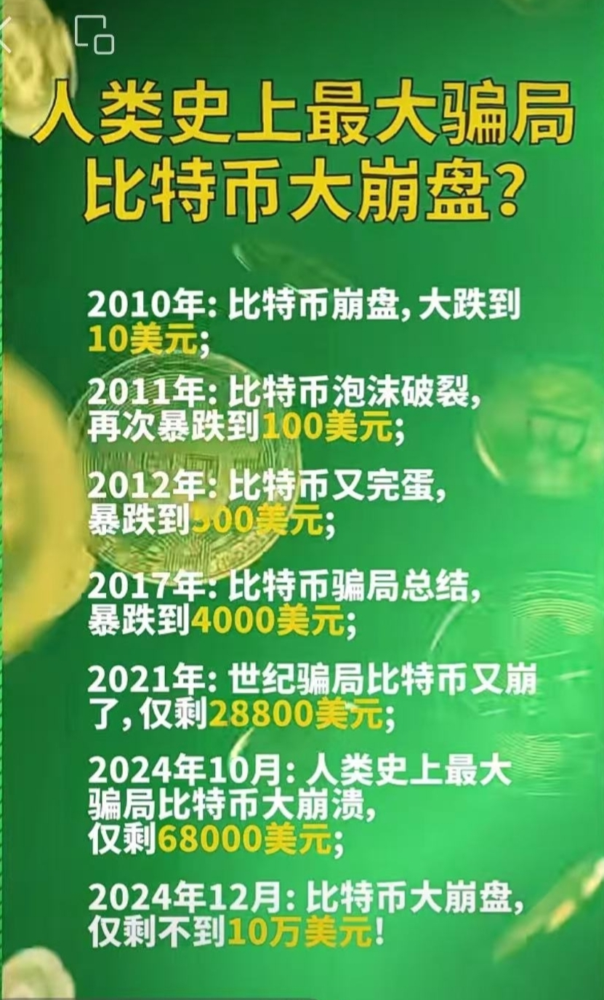

#1 · 未署名 · 2025-08-17T01:18:30+08:00加密笑话 比特币meme图，反讽图 比特币暴雷  比特币800元每个庞氏骗局 2013年5月5日——“揭秘疯狂的比特币：每个800元，新的庞氏骗局？” 2022年6月26日——“虚拟货币终究是黄粱一梦、庞氏骗局？” 2024年3月18日——“比特币的终局：价值为零的电子遗迹” 不得不说这十多年来除了比特币的价格不断创新高外，媒体记者们的起标题水平也在不断跃进